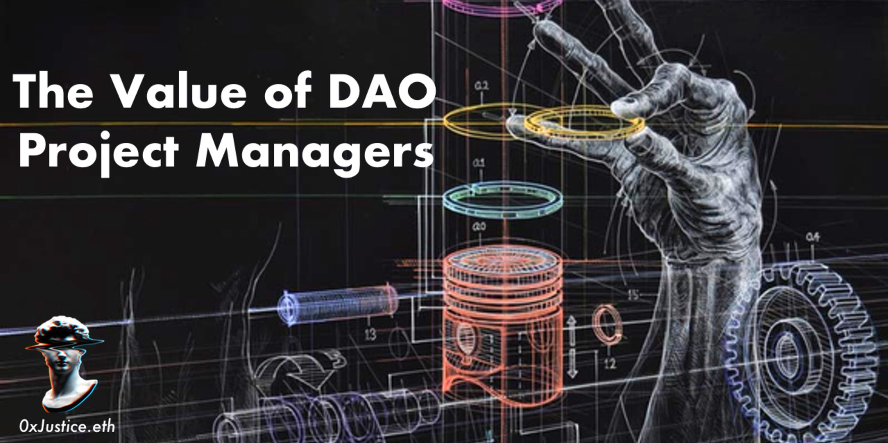

The Value of DAO Project Managers
Originally published at https://paragraph.com/@0xjustice/the-value-of-dao-project-managers

DAOs desperately need skilled project managers. As every skill set required by a project is potentially an entirely different agent or collection of agents, the need for a kind of general contractor to piece together disparate deliverables is essential. Traditional models of team forming/norming/storming do not work when people and groups themselves are transient and lack reputation systems. Even existing highly skilled project managers must reinterpret and reassess the tools of their trade to prioritize the unique incentive dynamics present in the Web3 context.
I love DAOs and their potential, but we are in danger of cascading failures if we do not create better coordination and execution patterns. I wholeheartedly endorse dedicated PM Guilds within DAOs because of this and am trying to introduce more Web3 concepts to traditional audiences through channels like TheModernAgilist.net to bring these two worlds together. I observe several antipatterns and the responding mitigation strategies as I work with teams. By sharing them, I hope to highlight the value of having a PM/Agilist as a part of the DAOs arsenal and as a resource to help teams directly.
Passion to Plan Ratio
DAOs are hotbeds of disruption and revolution. Most participants are working for free and spending at a loss to be a part of what is happening. This expenditure is acceptable at the individual level but problematic when it occurs at the project level. Funded workstreams have a fiduciary duty to the communities that have sponsored them. We may still be lost in the tragedy of the commons if an overzealous community supports an overzealous project without a concrete plan for how to deliver. Dedicated PMs go a long way to solving this. They can create plans before projects begin and provide ongoing transparency as projects progress with a hyperfocus on the minimum viable components. Launching the thing as a service to other DAOs shouldn't even be on the radar in the early stages.
Bounty all the Things
Traditional managers are unaccustomed to thinking in terms of bountied work. We tend to either think about an hourly wage or total contract funding. Paying for time assumes you know the worker's skill set, and contract funding assumes a market reputation system where participants are penalized for bailing. Bounties are a mindset shift, but they are a critical execution piece in contexts where these other features are missing. It is a massive power unlock to train existing project managers to use this approach. Web3 PM tools themselves are brand new, so the exact patterns for leveraging them are entirely new. The winning strategy combines dedicated team member salaries with bountied work items. Learn the tools, get the training, pivot on lessons learned, and keep it moving.
Handoffs are Coordination Multipliers
Moving a unit of work from one person to another is not free and directly contributes to coordination overhead. The entire thing that we are trying to kill here is coordination fatigue. Humans are terrible at estimating how much time a piece of work will take to complete, and that error in judgment compounds when the unit of work moves through a chain of workers. Minimizing these handoffs is of the utmost importance and contributes to the single responsibility principle a psychological impact of ownership. All handoffs likely can't be eradicated, but we should try to minimize them. The most significant way is to compose a team of t-shaped individuals. As the coordination drops, so will the ability to communicate directly with attainable consensus.
Unqualified Permissionlessness
Who doesn't believe in open and transparent work? Communities should have windows into the projects they fund. This access can go sidewise if interpreted in an unqualified fashion, though. I've personally been in many meetings where the fine details of the problem are being examined only to have the conversation derailed but someone introducing themselves or asking for context. These interruptions result from an interpretation of permissionlessness in an unqualified way. Permissionless does not mean that anyone, regardless of their background or commitment, can immediately assume a membership or leadership position. Permissionless means that a community or cohort can set its own rules for participation and that they require no permission from external entities to do so. As long as participants follow those processes, they can participate regardless of their identity or global domicile. Practically this may mean temporary but explicit closure of team membership applications.
Leadership Roles are Necessary
Projects have leaders, and they should. In BanklessDAO, we refer to these leaders as project champions. They are usually the authors of the proposal and must give an account of the progress and expenditures of that project. While it's popular to describe DAOs as leaderless, it does not mean that there are no leaders because there are many. It simply means that no singular leader controls the community. DAOs are networks of nodes, and it's not inappropriate for each node to have a person uniquely accountable for its internal operations. The freedom for participants is that they are free to write their own proposals, start their own teams, or leave an existing group if they find it no longer beneficial.
Team Member Transience is a Bug
It's prevalent even in established companies to treat teams as ephemeral entities. The idea is that teams can be constructed and deconstructed and resources fluidly moved around to respond to the moment's greatest need. This idea, unfortunately, is a mistake and a costly one. Persistent and long-lived teams are greater than the sum of their parts. This truth is why experienced PMs and Agilist treat teams as the atomic units of delivery. Rightly incentivizing team members to stick and stay through the course of their commitment is both strategically necessary and fair. Critics may frame additional compensation as unfair, but it matches the needed dedication and the risk assumed by those teams. The only other way to address this challenge is through staked contracts that penalize early departure. Hopefully, we will get a mechanism that leverages both in the coming years.
Close Discord and Twitter
Unless your job is social media management, your productivity is inversely proportional to the time spent on Discord and Twitter. For this reason, I'm suspicious of measuring DAO contributor engagement with such activity metrics. Suppose a team has a product specification and a kanban board and delivers completed work on a predictable and recurring basis. In that case, the result may very well be quiet social channels. It is a paradox. With the above elements in place, less channel chat may signal more BUIDL. Daily or weekly "work the board" sessions combined with biweekly demos of completed work should replace the social signal typically interpreted from channel activity. These structures will be the most effective weapons against constant interruption, contact switching, and dopamine fatigue. These practices are the weapons against Moloch.
Be Mission, not Resource-Centric
Probably due to the same hyperexuberance we've already touched on earlier, another mistake new projects make is to start with surveying the available skills in the room rather than the project's requirements. Everyone is excited to build something unique, and the community funds them to do it. So in that exuberance, everyone lists what they can do to help. The team creates bounties to compensate for those activities, and before you know it, the budget is gone, and no cohesive product is present. It's sad and painful because every single person meant well. The problem with this approach is that it starts on the wrong basis. The entire focus should be on decomposing the project's needs and breaking those down into composable deliverables. It sounds like a subtle difference, but it's a difference that distinguishes activity from results. The project and its needs must be center stage. What people can do and what they expect to be paid are secondary. All the more so the earlier in the phase of the project. Determine the job to be done, then get the right person for it, even if it means procuring the services of individuals outside of the DAO.
Fallout
There are potential downsides to putting into practice all of the above recommendations. Your team may be executing like a well-oiled machine, but there may be intangible and undesirable side effects.
It may feel like work again. Part of the sales pitch of working in DAOs is fun. This sentiment is not untrue, but it may not be the whole truth. Working in DAOs is not fundamentally different than freelancing. We are so enamored with this new organizational entity that we start to think that every aspect of the work is uncharted territory when it's not. Is it excited and meaningful? Resoundingly yes. Does it also feel like work sometimes? Also yes. Don't be surprised if people assume you are doing it wrong if it starts to feel thus.
The project may suffer accusations of centralization. It's the 14-letter c-word of Web3. My recommendation is to ensure projects are hyper-transparent in their workflows and burndowns and that they demonstrate completed work on a regular cadence. Consistent and steady delivery builds trust, and as long as the team's onboarding, offboarding, and work agreements are transparent, this will win against the critics' accusations in the long run.
The strategies listed above will do one thing. They will separate the truly invested from casual participants. Other non-project team groups exist to facilitate informal or learning-oriented agendas. There is no shame in individuals seeking one, but a distinction between a meetup and startup mentality is a prerequisite for either group to prosper. Read my Rethinking the DAO Contributor Funnel to learn more about dividing groups by purpose.
"It is not the critic who counts; not the man who points out how the strong man stumbles, or where the doer of deeds could have done them better. The credit belongs to the man who is actually in the arena, whose face is marred by dust and sweat and blood; who strives valiantly; who errs, who comes short again and again, because there is no effort without error and shortcoming; but who does actually strive to do the deeds; who knows great enthusiasms, the great devotions; who spends himself in a worthy cause; who at the best knows, in the end, the triumph of high achievement, and who at the worst, if he fails, at least fails while daring greatly, so that his place shall never be with those cold and timid souls who neither know victory nor defeat." - The Man in the Arena
Special thanks to Tetranome.eth and the Bankless Academy team for continuing to grow and change for the better. Their team retrospective exercise specifically inspired this post.
Originally published on 0xJustice.eth